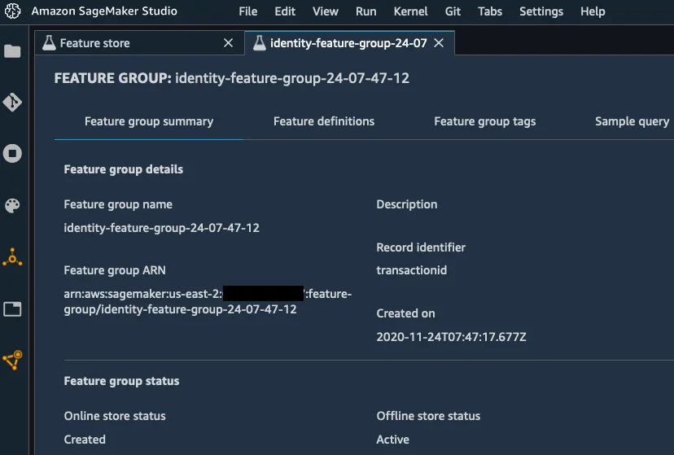
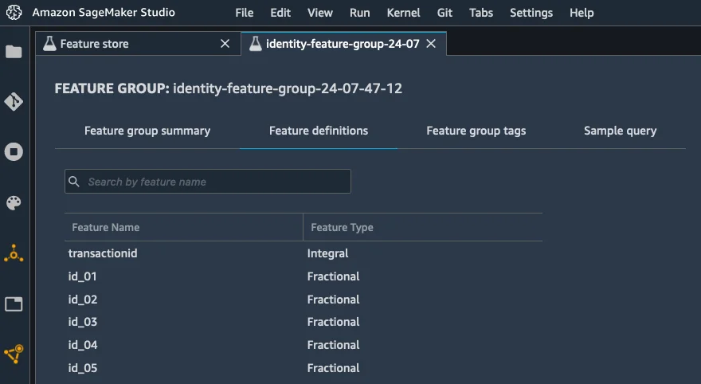
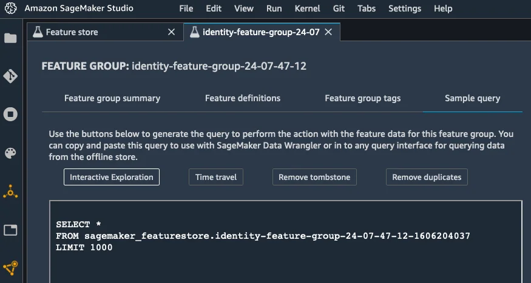

Published: 2020-12-08 | Originally published at AWS Blog
Today, I’m extremely happy to announce Amazon SageMaker Feature Store , a new capability of Amazon SageMaker that makes it easy for data scientists and machine learning engineers to securely store, discover and share curated data used in training and prediction workflows.
For all the importance of selecting the right algorithm to train machine learning (ML) models, experienced practitioners know how crucial it is to feed it with high-quality data. Cleaning data is a good first step, and ML workflows routinely include steps to fill missing values, remove outliers, and so on. Then, they often move on to transforming data, using a mix of common and arcane techniques known as “feature engineering.”
Simply put, the purpose of feature engineering is to transform your data and to increase its expressiveness so that the algorithm may learn better. For instance, many columnar datasets include strings, such as street addresses. To most ML algorithms, strings are meaningless, and they need to be encoded in a numerical representation. Thus, you could replace street addresses with GPS coordinates, a much more expressive way to learn the concept of location. In other words, if data is the new oil, then feature engineering is the refining process that turns it into high-octane jet fuel that helps models get to stratospheric accuracy.
Indeed, ML practitioners spend a lot of time crafting feature engineering code, applying it to their initial datasets, training models on the engineered datasets, and evaluating model accuracy. Given the experimental nature of this work, even the smallest project will lead to multiple iterations. The same feature engineering code is often run again and again, wasting time and compute resources on repeating the same operations. In large organizations, this can cause an even greater loss of productivity, as different teams often run identical jobs, or even write duplicate feature engineering code because they have no knowledge of prior work.
There’s another hard problem that ML teams have to solve. As models are trained on engineered datasets, it’s imperative to apply the same transformations to data sent for prediction. This often means rewriting feature engineering code, sometimes in a different language, integrating it in your prediction workflow, and running it at prediction time. This whole process is not only time-consuming, it can also introduce inconsistencies, as even the tiniest variation in a data transform can have a large impact on predictions.
In order to solve these problems, ML teams sometimes build a feature store, a central repository where they can keep and retrieve engineered data used in their training and predictions jobs. As useful as feature stores are, building and managing your own involves a lot of engineering, infrastructure, and operational effort that takes valuable time away from actual ML work. Customers asked us for a better solution, and we got to work.
Introducing Amazon SageMaker Feature Store
Amazon SageMaker Feature Store
is a fully managed centralized repository for your ML features, making it easy to securely store and retrieve features without having to manage any infrastructure. It’s part of
Amazon SageMaker
, our fully managed service for ML, and supports all algorithms. It’s also integrated with
Amazon SageMaker Studio
, our web-based development environment for ML.
Features stored in SageMaker Feature Store are organized in groups, and tagged with metadata. Thanks to this, you can quickly discover which features are available, and whether they’re suitable for your models. Multiple teams can also easily share and re-use features, reducing the cost of development and accelerating innovation.
Once stored, features can be retrieved and used in your SageMaker workflows: model training, batch transform, and real-time prediction with low latency. Not only do you avoid duplicating work, you also build consistent workflows that use the same consistent features stored in the offline and online stores.
The Climate Corporation (Climate) is a subsidiary of Bayer , and the industry leader in bringing digital innovation to farmers. Says Daniel McCaffrey , Vice President, Data and Analytics, Climate: “ At Climate, we believe in providing the world’s farmers with accurate information to make data driven decisions and maximize their return on every acre. To achieve this, we have invested in technologies such as machine learning tools to build models using measurable entities known as features, such as yield for a grower’s field. With Amazon SageMaker Feature Store, we can accelerate the development of ML models with a central feature store to access and reuse features across multiple teams easily. SageMaker Feature Store makes it easy to access features in real-time using the online store, or run features on a schedule using the offline store for different use cases, and we can develop ML models faster .”
Care.com , the world’s leading platform for finding and managing high-quality family care, is also using Amazon SageMaker Feature Store . This is what Clemens Tummeltshammer , Data Science Manager, Care.com, told us: “ A strong care industry where supply matches demand is essential for economic growth from the individual family up to the nation’s GDP. We’re excited about Amazon SageMaker Feature Store and Amazon SageMaker Pipelines , as we believe they will help us scale better across our data science and development teams, by using a consistent set of curated data that we can use to build scalable end-to-end machine learning model pipelines from data preparation to deployment. With the newly announced capabilities of Amazon SageMaker, we can accelerate development and deployment of our ML models for different applications, helping our customers make better informed decisions through faster real-time recommendations. ”
Now, let’s see how you can get started.
Storing and Retrieving Features with Amazon SageMaker Feature Store
Once you’ve run your feature engineering code on your data, you can organize and store your engineered features in
SageMaker Feature Store
, by grouping them in feature groups. A feature group is a collection of records, similar to rows in a table. Each record has a unique identifier, and holds the engineered feature values for one of the data instances in your original data source. Optionally, you can choose to encrypt the data at rest using your own
AWS Key Management Service (AWS KMS)
key that is unique for each feature group.
How you define feature groups is up to you. For example, you could create one per data source (CSV files, database tables, and so on), and use a convenient unique column as the record identifier (primary key, customer id, transaction id, and so on).
Once you’ve got your groups figured out, you should repeat the following steps for each group:
Fractional
,
Integral
, or
String
).
create_feature_group()
API:
sm_feature_store.create_feature_group(
# The name of the feature group
FeatureGroupName=my_feature_group_name,
# The name of the column acting as the record identifier
RecordIdentifierName=record_identifier_name,
# The name of the column action as the feature timestamp
EventTimeFeatureName = event_time_feature_name,
# A list of feature names and types
FeatureDefinitions=my_feature_definitions,
# The S3 location for the offline feature store
OfflineStoreConfig=offline_store_config,
# Optionally, enable the online feature store
OnlineStoreConfig=online_store_config,
# An IAM role
RoleArn=role
)
put_record()
API:
sm_feature_store.put_record(
FeatureGroupName=feature_group_name,
Record=record,
EventTime=event_time
)For faster ingestion, you could create multiple threads and parallelize this operation.
At this point, features will be available in Amazon SageMaker Feature Store . Thanks to the offline store, you can use services such as Amazon Athena , AWS Glue , or Amazon EMR to build datasets for training: fetch the corresponding JSON objects in S3, select the features that you need, and save them in S3 in the format expected by your ML algorithm. From then on, it’s SageMaker business as usual!
In addition, you can use the
get_record()
API to access individual records stored in the online store, passing the group name and the unique identifier of the record you want to access, like so:
record = sm_feature_store.get_record(
FeatureGroupName=my_feature_group_name,
RecordIdentifierValue={"IntegralValue": 5962}
)Amazon SageMaker Feature Store is designed for fast and efficient access for real time inference, with a P95 latency lower than 10ms for a 15-kilobyte payload. This makes it possible to query for engineered features at prediction time, and to replace raw features sent by the upstream application with the exact same features used to train the model. Feature inconsistencies are eliminated by design, letting you focus on building the best models instead of chasing bugs.
Finally, as SageMaker Feature Store includes feature creation timestamps, you can retrieve the state of your features at a particular point in time.
As Amazon SageMaker Feature Store is integrated with SageMaker Studio , I can see my two features groups there.
Right-clicking on “Open feature group detail”, I open the identity feature group.

I can see feature definitions.

Finally, I can generate queries for the offline store, which I could add to a Amazon SageMaker Data Wrangler workflow to load features prior to training.

How to Get Started with Amazon SageMaker Feature Store
As you can see,
SageMaker Feature Store
makes it easy to store, retrieve, and share features required by your training and prediction workflows.
SageMaker Feature Store is available in all regions where SageMaker is available. Pricing is based on feature reads and writes, and on the total amount of data stored.
Here are sample notebooks that will help you get started right away. Give them a try , and let us know what you think. We’re always looking forward to your feedback, either through your usual AWS support contacts, or on the AWS Forum for SageMaker.
- JulienJulien is the Artificial Intelligence & Machine Learning Evangelist for EMEA . He focuses on helping developers and enterprises bring their ideas to life. In his spare time, he reads the works of JRR Tolkien again and again.
{kind=link}